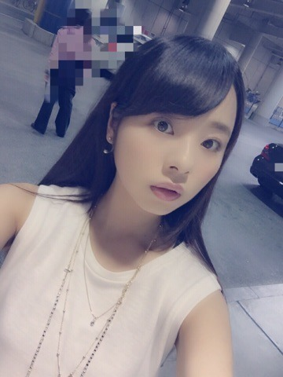
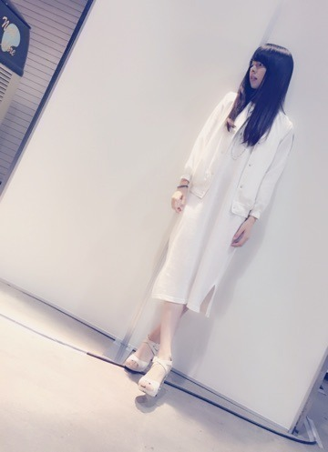
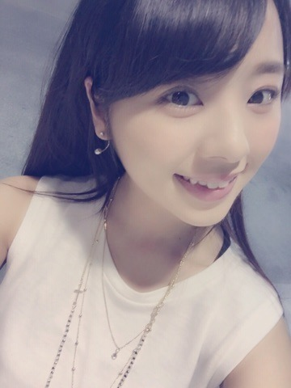
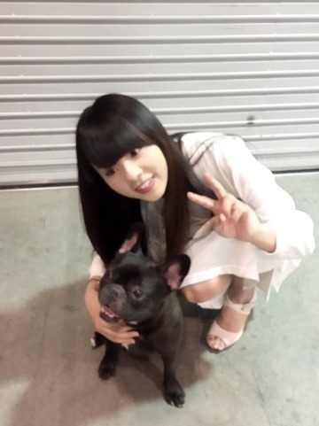

こんにちわ.＊
まにだよ，ろってぃだよ？

尾崎豊さんの曲を流しながらblog書いています.＊
その内，山崎まさよしさんの曲も流れてきます（＾ω＾）
日曜に横浜にて握手会がありました.＊
来てくれた皆ありがとう...
毎回毎回，皆さんの温かさを感じます．
ということで，今回のまに私服は，，，♡

ノースリーブの白ワンピ♡
日焼け防止として、こうやって薄手の羽織物も...。
こういう無地のシンプルな洋服には
ゴールドやシルバーのアクセを付けるといい感じだよっ♡
こんな感じ.＊

握手会は、ノースリーブで参戦しました♡
こっちの方がスッキリするしねん．
『one way』で購入したよん.＊
シンプルだしカラーも何種類かあったので是非
Rotty夢の女性の皆さん，お揃いにしませんか♡笑？
ぁ、男性の方もお揃いにする♡？
なんちゃって(#^.^#)
⌒⌒⌒⌒⌒⌒⌒⌒⌒⌒⌒⌒⌒
あっ、『One Night Carnival』流れてきた♡
そういえばですねぇ，皆さん「NOGIBINGO!4」の見てくれましたか～(#^.^#)？
能條のラップに合わせて
私踊らせて頂きました♡笑
最初あのラップ聴いた時は爆笑もんで、どんなダンス踊ればええんやぁぁぁ((((；ﾟДﾟ)))))))となったんですが，どうにかダンスつけることができました♡♡
緊張したんですが収録後メンバーやスタッフさん方に褒めてもらうことができて，ほっとしました。。
最近，お仕事終わりにね，
高校生の頃からのお友達とお茶しました.＊
キャラメルラテを飲みながらまったりと沢山お話できて幸せな時間を過ごしました．
友達は大事にしようと思います♡
ぁぁぁ♡
音楽聴いてたらカラオケ行きたくなってきたやん。
やっぱり犬は可愛い。だいすき。

読んでくれてありがとワン♡
また更新しますね...まひろより.＊